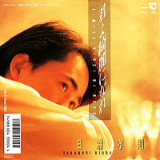

日浦孝則 シングル
スロウダンス
1987.04.21 CE-87
01. スロウダンス
作詞：日浦 孝則・池永 康記 作曲：日浦 孝則 編曲：杉山TOM
02. STATION
作詞：池永 康記 作曲：日浦 孝則 編曲：杉山TOM

君よ綺麗になれ
1988.02.21 10CH-5
カセット、LPも同時発売
同名ミニアルバムあり
01. 君よ綺麗になれ
作詞：高柳 恋 作曲：山本拓己 編曲：杉山TOM
メルシャンワインCMソング/テレビ東京系「隠密・奥の細道」EDテーマ
02. Return Flight
作詞：池永 康記 作曲：日浦 孝則 編曲：梁 邦彦
My Dear One
1998.10.23 KIDS-44
01. My Dear One
作詞：LoveComedy 作曲：LoveComedy 編曲：鈴木 豪
玉姫グループ・イメージソング
02. YOU and ME(with 井上武英)
作詞：日浦 孝則・TAKEHIDE 作曲：日浦 孝則 編曲：鈴木 豪
03. 愛にはぐれないように
作詞：池永 康記 作曲：日浦 孝則 編曲：鈴木 豪
04. My Dear One（Backing Track）
作詞：LoveComedy 作曲：LoveComedy 編曲：鈴木 豪